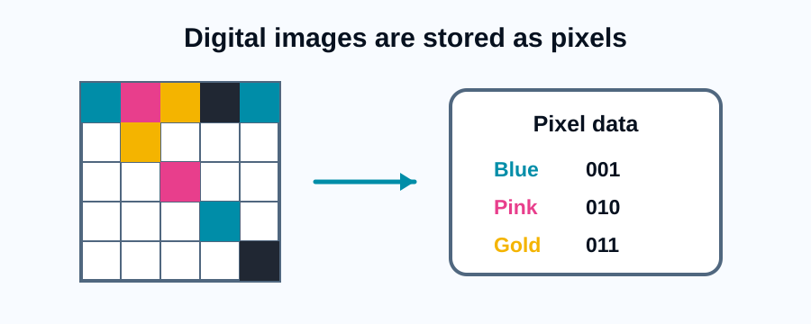
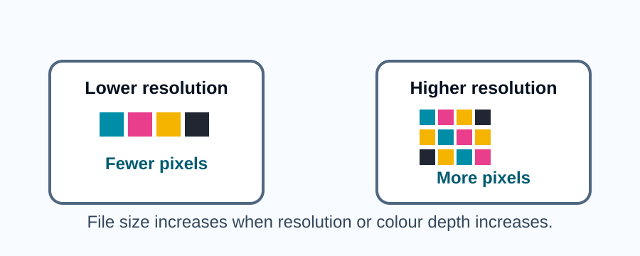

Pixels and bitmap images
A bitmap image is made from a grid of tiny squares called pixels. Each pixel stores one colour using a binary value.
When the pixels are shown together, they form the image that we see on screen.

Resolution and colour depth
Resolution is the number of pixels in an image. A higher resolution image has more pixels and can show more detail.
Colour depth is the number of bits used to store the colour of each pixel. A higher colour depth allows more possible colours.

| Term | Meaning | Effect if increased |
|---|---|---|
| Resolution | The number of pixels in the image | More detail and larger file size |
| Colour depth | The number of bits used for each pixel colour | More colours and larger file size |
| Metadata | Data about the image file | Stores information such as width, height and colour depth |
Comprehension questions
Q1) State what is meant by image resolution. (1 mark)
Resolution is the number of pixels in an image.
Q2) Explain why increasing colour depth increases file size. (2 marks)
Increasing colour depth uses more bits for each pixel. This means more data must be stored for the image, so the file size increases.
Calculating bitmap file size
A simple estimate for bitmap image file size is:
width in pixels x height in pixels x colour depth
This gives the size in bits before any compression or extra metadata is considered.
Activity
An image is 100 pixels wide and 50 pixels high. It uses 8 bits per pixel. Calculate the file size in bits.
100 x 50 x 8 = 40,000 bits.
Key points
- Bitmap images are made from pixels.
- Resolution is the number of pixels in the image.
- Colour depth is the number of bits used for each pixel colour.
- Increasing resolution or colour depth usually increases file size.